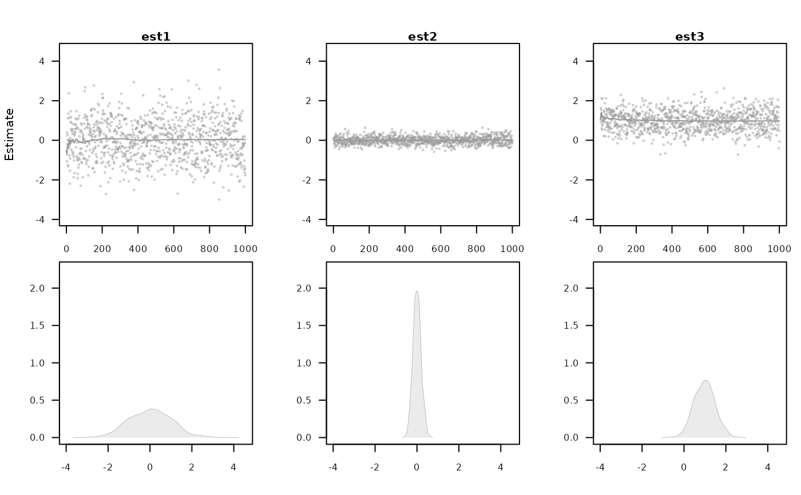
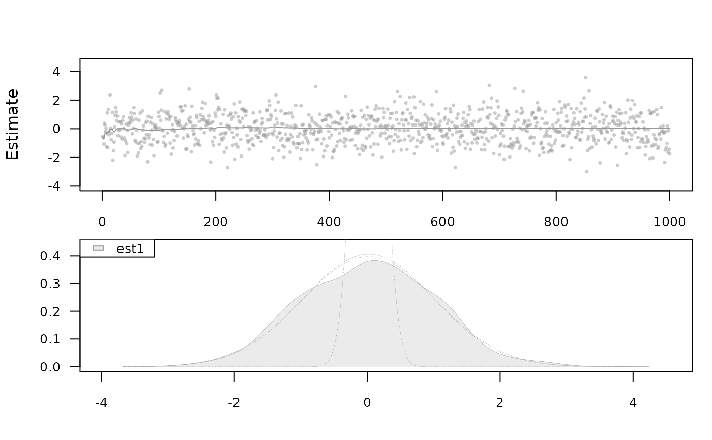

Density and scatter plots
# S3 method for sim plot( x, estimate, se = NULL, true = NULL, names = NULL, auto.layout = TRUE, byrow = FALSE, type = "p", ask = grDevices::dev.interactive(), col = c("gray60", "orange", "darkblue", "seagreen", "darkred"), pch = 16, cex = 0.5, lty = 1, lwd = 0.3, legend, legendpos = "topleft", cex.legend = 0.8, plot.type = c("multiple", "single"), polygon = TRUE, density = 0, angle = -45, cex.axis = 0.8, alpha = 0.2, main, cex.main = 1, equal = FALSE, delta = 1.15, ylim = NULL, xlim = NULL, ylab = "", xlab = "", rug = FALSE, rug.alpha = 0.5, line.col = scatter.col, line.lwd = 1, line.lty = 1, line.alpha = 1, scatter.ylab = "Estimate", scatter.ylim = NULL, scatter.xlim = NULL, scatter.alpha = 0.5, scatter.col = col, border = col, true.lty = 2, true.col = "gray70", true.lwd = 1.2, density.plot = TRUE, scatter.plot = FALSE, running.mean = scatter.plot, ... )
Arguments
| x | sim object |
|---|---|
| estimate | columns with estimates |
| se | columns with standard error estimates |
| true | (optional) vector of true parameter values |
| names | (optional) names of estimates |
| auto.layout | Auto layout (default TRUE) |
| byrow | Add new plots to layout by row |
| type | plot type |
| ask | if TRUE user is asked for input, before a new figure is drawn |
| col | colour (for each estimate) |
| pch | plot symbol |
| cex | point size |
| lty | line type |
| lwd | line width |
| legend | legend |
| legendpos | legend position |
| cex.legend | size of legend text |
| plot.type | 'single' or 'multiple' (default) |
| polygon | if TRUE fill the density estimates with colour |
| density | if non-zero add shading lines to polygon |
| angle | shading lines angle of polygon |
| cex.axis | Font size on axis |
| alpha | Semi-transparent level (1: non-transparent, 0: full) |
| main | Main title |
| cex.main | Size of title font |
| equal | Same x-axis and y-axis for all plots |
| delta | Controls the amount of space around axis limits |
| ylim | y-axis limits |
| xlim | x-axis limits |
| ylab | y axis label |
| xlab | x axis label |
| rug | if TRUE add rug representation of data to x-axis |
| rug.alpha | rug semi-transparency level |
| line.col | line colour (running mean, only for scatter plots) |
| line.lwd | line width (running mean, only for scatter plots) |
| line.lty | line type (running mean, only for scatter plots) |
| line.alpha | line transparency |
| scatter.ylab | y label for density plots |
| scatter.ylim | y-axis limits for density plots |
| scatter.xlim | x-axis limits for density plots |
| scatter.alpha | semi-transparency of scatter plot |
| scatter.col | scatter plot colour |
| border | border colour of density estimates |
| true.lty | true parameter estimate line type |
| true.col | true parameter colour |
| true.lwd | true parameter line width |
| density.plot | if TRUE add density plot |
| scatter.plot | if TRUE add scatter plot |
| running.mean | if TRUE add running average estimate to scatter plot |
| ... | additional arguments to lower level functions |
Examples
n <- 1000 val <- cbind(est1=rnorm(n,sd=1),est2=rnorm(n,sd=0.2),est3=rnorm(n,1,sd=0.5), sd1=runif(n,0.8,1.2),sd2=runif(n,0.1,0.3),sd3=runif(n,0.25,0.75)) plot.sim(val,estimate=c(1,2),true=c(0,0),se=c(4,5),equal=TRUE,scatter.plot=TRUE)plot.sim(val,estimate=c(1,3),true=c(0,1),se=c(4,6),xlim=c(-3,3), scatter.ylim=c(-3,3),scatter.plot=TRUE)plot.sim(val,estimate=c(1,2),true=c(0,0),se=c(4,5),equal=TRUE, plot.type="single",scatter.plot=TRUE)